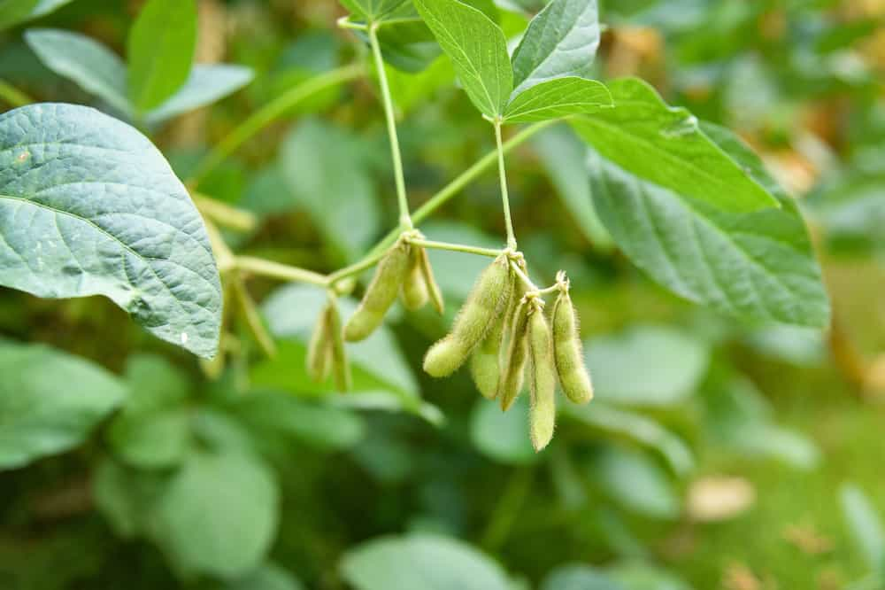

Soybean
Soybeans are a versatile legume that is an excellent source of protein and essential nutrients. They are used for a variety of purposes such as food, animal feed, and industrial products. Soybeans are an important crop for farmers worldwide, and they are relatively easy to grow.
Cost of Planting Soybean

The cost of planting soybeans can vary depending on various factors such as land preparation, seed cost, fertilizer, and labor costs. However, the cost can be higher or lower depending on the specific location and farming practices.
Return after selling Soybean

The return on investment for soybean farming can vary depending on the yield and market prices. This can provide a good return on investment for farmers and make soybean farming a profitable venture.